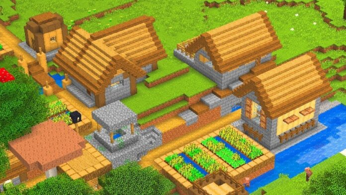
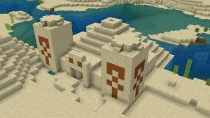
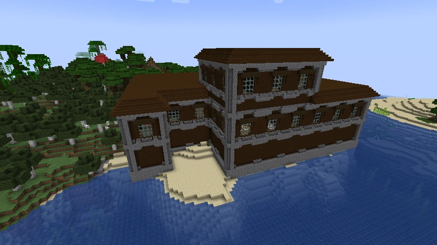
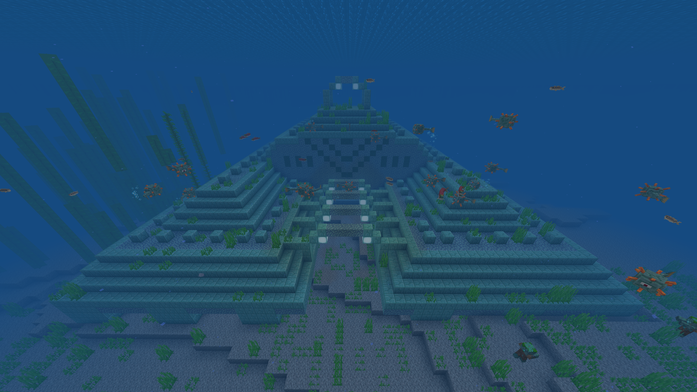
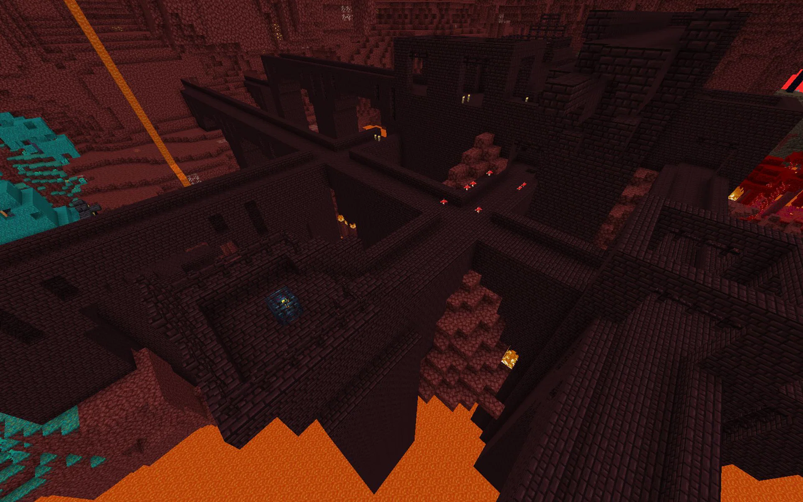

Le strutture
In Minecraft, ci sono diverse strutture che possono essere trovate nel mondo di gioco. Esse sono
generate casualmente
e sparse per tutto il mondo, al loro interno si possono trovare metalli e pietre preziose ma anche
altri oggetti utili
come armature, armi, utensili, materiali di costruzione e molto altro ancora. L'esatta composizione
e quantita' di tesori
puo' variare in base alla versione del gioco e alle impostazioni della generazione del mondo.
Ecco alcune delle principali:
-Villaggio
-Tempio del deserto
-Tempio della giungla
-Magione
-Tempio oceanico
-Fortezza del Nether
Villaggio
E' un insediamento sono abitati dai villager,
NPC (personaggi non giocanti) che commerciano con il giocatore.
I villaggi sono composti da case, fattorie, pozzi e altri edifici.
Vi si puo' trovare cibo, armature, armi, ferro e addirittura diamanti!
Il villaggio cambia apparenze in base al bioma in cui si trova.

Tempio del deserto
E' una struttura a piramide, la quale nasconde metalli e pietre preziosi
sotto al suo pavimento. Ma attenzione! Per arrivare al tesoro c'e' una caduta considerevole
e una volta li' potresti innescare della dinamite!

Tempio della giungla
La struttura ricorda un tempio Maya. All'interno sono presenti grandi ricchezze
ma anche molte trappole! Presta attenzione.
Magione
E' abitata da mob ostili chiamati Illager, come stregoni e vendicatori.
Contengono tesori e strani esperimenti, riuscirai a capire i loro intenti?

Tempio oceanico
E' una struttura sottomarina, segno di una civilta' marina passata. Contiene diversi blocchi d'oro
protetti da delle creature simili a dei pesci palla detti guardiani.

Fortezza del Nether
E' una struttura che viene generata solo nel Nether, e' costituita da una serie di corridoi e stanze,
costruite principalmente con blocchi di pietra del Nether. Sono caratterizzati da un'architettura
cupa e minacciosa, con un'atmosfera di pericolo imminente. all'interno si trovano casse contenenti
preziosi oggetti come lingotti d'oro, ossidiana, polvere di redstone, perle di Ender e altri
materiali utili.
Ma attenzione, e' piena di mostri ostili!
